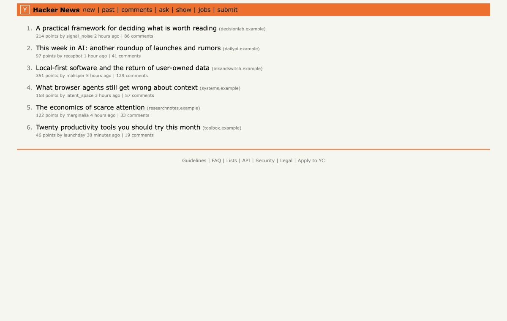

Decide before clicking
Preview whether a link is likely worth reading while you browse a feed.
Your attention, evaluated locally
Attention is a Chrome extension that estimates how useful an article is for you, right now—then points you to the parts worth your time.
Free and open source · No account · Local evaluation

Preview whether a link is likely worth reading while you browse a feed.
Get an explainable score and jump to the sections most useful to you.
Your profile, feedback, and reading memory stay inside your browser.
How it works
Choose what you are doing—working, learning, exploring, or relaxing—and how much time you have.
Attention weighs relevance, novelty, actionability, and argument quality to suggest Read, Skim, Save, or Skip.
Tell Attention whether the material was worth it. Future estimates calibrate locally from your feedback.
Local-first by design
Attention works without an account, analytics, or an API key. Local evaluation never sends article content anywhere.
Optional AI analysis runs only when you request it and uses your own Vercel AI Gateway key. You can erase all Attention data at any time.
Read the privacy model →Try the prototype
chrome://extensions and enable Developer mode.